Running nonadiabatic MD in Julia
A look under the hood of the NQCD packages
06.12.2024
The maths behind MD: Solving differential equations
Formulating a problem
Classical system Hamiltonian \[ \mathrm{H=\frac{\mathbf{P}^2}{2M}+V(\mathbf{R})} \]
Starting conditions \[ \vec{v}=\begin{bmatrix}0\\\vdots\\0\end{bmatrix}, \vec{r}=\begin{bmatrix}\vdots\end{bmatrix} \]
Integration scheme
Velocity Verlet integration
Solving Differential equations in Julia
Consistent structure for creating problems and solving them.
Identical I/O for different propagation methods.
Flexible, extendable.
- Units
- Unit conversion
Example: defining an ODEProblem
Equation of motion (1D Harmonic oscillator)
function hamiltonian_1d(u; omega=omega_1, m=m1)
return (0.5*omega^2*m*u.x[2]^2) + (1/2 * u.x[1]^2 * m)
endStarting parameters
Resulting ODE problem:
Example: Solving the ODEProblem
The DifferentialEquations.jl pipeline
MD workflows may require:
- Parallelisation
- Callbacks
- Reductions
Now where does NQCDynamics come in?
The NQCD “ecosystem”
NQCDynamics.jl
- wraps around DifferentialEquations.jl to propagate dynamics
- unit conversions
- equations of motion
- consistent inputs/outputs
- Handling of ensemble simulations for statistical distributions
Atomic structure: NQCBase.jl
AtomsPeriodicCell- IO functions:1
convert_from_ase_atomsconvert_to_ase_atoms
Potential Energy Surfaces: NQCModels.jl
Model- Defines a potential energy surface1 2
- Dimensionality: arbitrary (in principle)
- Methods:
potential(model, R), derivative(model, R)(and in-place versions)
- Interface to ASE for ML models / AIMD3

Model types implemented in NQCModels.jl
Statistical sampling: NQCDistributions.jl
DynamicalDistribution- Container for initial conditions (positions, velocities)
- Various distribution functions (e.g
VelocityBoltzmann)
How does NQCDynamics work?
Running an MD simulation (1/2)
Atoms
- Chemical symbols
- or arbitrary masses (
[:X]atoms)
Initial conditions
Potential energy surface
Combining them in a Simulation
Simulations1
1sim = Simulation{Method}(
2 atoms::Atoms{T},
3 model::Model;
4 temperature=0u"K",
5 cell::AbstractCell=InfiniteCell()
)- 1
- Defines the MD method to use: Classical, MDEF, Ehrenfest, …
- 2
- Atoms contained in simulation
- 3
- PES to use
- 4
- Additional arguments for MD method
- 5
- Additional structural parameters.
Simulations contain aCalculatorto cache energies, forces,…- Containers for simulation parameters
Running an MD simulation (2/2)
simulation_output = run_dynamics(
sim,
(0,1000),
initial_conditions;
output = (OutputPosition, OutputVelocity),
dt = 0.1,
trajectories = 100,
selection = 1:100,
reduction = MeanReduction(),
ensemble_algorithm = SciMLBase.EnsembleDistributed(),
callback = CellBoundaryCallback(),
)run_dynamicscreates the O/SDE problem for DifferentialEquations.jl to solve1- Outputs are processed from solution objects
Dynamics Parameters
simulation_output = run_dynamics(
sim,
(0,1000),
initial_conditions;
output = (OutputPosition, OutputVelocity),
dt = 0.1,
trajectories = 100,
selection = 1:100,
reduction = MeanReduction(),
ensemble_algorithm = SciMLBase.EnsembleDistributed(),
callback = CellBoundaryCallback(),
)- Simulation time span (in a.u.)
Dynamics Parameters
simulation_output = run_dynamics(
sim,
(0,1000),
initial_conditions;
output = (OutputPosition, OutputVelocity),
dt = 0.1,
trajectories = 100,
selection = 1:100,
reduction = MeanReduction(),
ensemble_algorithm = SciMLBase.EnsembleDistributed(),
callback = CellBoundaryCallback(),
)- Initial conditions:
- Either DynamicsVariables to start with a single set of configurations.
- Or a
DynamicalDistributionto sample from.
Dynamics Parameters
simulation_output = run_dynamics(
sim,
(0,1000),
initial_conditions;
output = (OutputPosition, OutputVelocity),
dt = 0.1,
trajectories = 100,
selection = 1:100,
reduction = MeanReduction(),
ensemble_algorithm = SciMLBase.EnsembleDistributed(),
callback = CellBoundaryCallback(),
)DynamicsOutputs
- Output functions that act on a DiffEQ solution
- e.g. positions, velocities, populations, final quantum states, …
- NQCD Docs: DynamicsOutputs
Dynamics Parameters
simulation_output = run_dynamics(
sim,
(0,1000),
initial_conditions;
output = (OutputPosition, OutputVelocity),
dt = 0.1,
trajectories = 100,
selection = 1:100,
reduction = MeanReduction(),
ensemble_algorithm = SciMLBase.EnsembleDistributed(),
callback = CellBoundaryCallback(),
)- Simulation time step
- Snapshot every time step unless
saveat=is specified- Can be a number for time intervals
- or a Vector of times to save at
Dynamics Parameters
simulation_output = run_dynamics(
sim,
(0,1000),
initial_conditions;
output = (OutputPosition, OutputVelocity),
dt = 0.1,
trajectories = 100,
selection = 1:100,
reduction = MeanReduction(),
ensemble_algorithm = SciMLBase.EnsembleDistributed(),
callback = CellBoundaryCallback(),
)- Number of trajectories to simulate
selection=nothingfor random sampling, otherwise indices of distribution to sample from.Reductions applied to outputs- Default: Append
MeanReductionfor ensemble MeanFileReduction
Dynamics Parameters
simulation_output = run_dynamics(
sim,
(0,1000),
initial_conditions;
output = (OutputPosition, OutputVelocity),
dt = 0.1,
trajectories = 100,
selection = 1:100,
reduction = MeanReduction(),
ensemble_algorithm = SciMLBase.EnsembleDistributed(),
callback = CellBoundaryCallback(),
)Parallelisation strategy
EnsembleSerial: One trajectory at a time.
EnsembleDistributed: One trajectory per process. No shared memory.
EnsembleThreads: One trajectory per thread. Shared memory.
EnsembleSplitThreads: One trajectory per thread per process.
Dynamics Parameters
simulation_output = run_dynamics(
sim,
(0,1000),
initial_conditions;
output = (OutputPosition, OutputVelocity),
dt = 0.1,
trajectories = 100,
selection = 1:100,
reduction = MeanReduction(),
ensemble_algorithm = SciMLBase.EnsembleDistributed(),
callback = CellBoundaryCallback(),
)Callbacks1:
- Code which is executed on dynamics as they are propagated.
- e.g. terminate simulations if a condition is satisfied.
How do I scale dynamics up for many trajectories?
Parallelisation approaches
Multithreading
- Shared memory (lower resource usage, IO)
- Python hates this (global interpreter lock)
- Need to avoid data races
Trivial taskfarming
- No shared memory (higher resource usage, IO)
- Fewer issues with data races
Parallelisation in NQCDynamics.jl through EnsembleAlgorithms
simulation_output = run_dynamics(
sim,
(0,1000),
initial_conditions;
output = (OutputPosition, OutputVelocity),
dt = 0.1,
trajectories = 100,
selection = 1:100,
reduction = MeanReduction(),
ensemble_algorithm = SciMLBase.EnsembleDistributed(),
callback = CellBoundaryCallback(),
)EnsembleSerial: One trajectory at a time.
EnsembleDistributed: One trajectory per process. No shared memory.
EnsembleThreads: One trajectory per thread. Shared memory.
EnsembleSplitThreads: One trajectory per thread per process.
Parallelisation with ClusterScripts.jl1
- Designed for simulations across multiple combinations of parameters.
- Trivial taskfarming
- Temporary file storage, functions to concatenate back into input parameter space.
fixed_parameters=Dict(
"task" => "mdef+2tm",
"trajectories" => 10000,
"runtime" => 4.7u"ps", # start at -0.4ps from laser maximum
"timestep" => 0.1u"fs", # Timestep
"saveat" => 0.1u"fs",
"ensemble_algorithm" => EnsembleSerial(), # Parallelisation method to use
"outputs" => (OutputInitial, OutputFinal, OutputDesorptionAngle(friction_atoms), OutputDesorptionTrajectory(friction_atoms, extra_frames=200)),
"friction_atoms" => friction_atoms,
)
variables=Dict(
"starting_temperature" => [100, 150, 200, 250, 300],
"fluence" => [10,20,40,60,80,100,120],
)
job_queue=build_job_queue(fixed_parameters, variables, postprocess_queue)
serialise_queue!(job_queue; filename="simulation_parameters.jld2")How can I contribute to NQCD?
- Different packages to compartmentalise categories of functionality
- Atomic structure
- PESs
- …
- Submodules to isolate functional components
- Simulations
- Calculators
- DynamicsOutputs
- …
A new type of output
DynamicsOutputs
src/DynamicsOutputs.jl
OutputKineticEnergy(sol, i) = DynamicsUtils.classical_kinetic_energy.(sol.prob.p, sol.u)
export OutputKineticEnergy- Functions that take DiffEq solution object
- DifferentialEquations.jl: Solution Handling
struct OutputQuantisedDiatomic{S,H,V}
sim::S
height::H
normal_vector::V
end
export OutputQuantisedDiatomic
function (output::OutputQuantisedDiatomic)(sol, i)
final = last(sol.u)
ν, J = QuantisedDiatomic.quantise_diatomic(output.sim,
DynamicsUtils.get_velocities(final), DynamicsUtils.get_positions(final);
height=output.height, normal_vector=output.normal_vector)
return (ν, J)
endAnalysis methods for post-processing
src/structure.jl
- Basic functions for atomic structure, e.g. distance across PBC, centre of mass
src/Analysis/Analysis.jl
- Submodules for analysis type, e.g. functions for diatomic molecules in
diatomic.jl.
A new model?
A model in NQCModels.jl needs to implement:
ndofs(m::Model)potential(m::Model, R::AbstractArray)derivative(m::Model, R::AbstractArray)
Adiabatic models: - Single electronic state
Diabatic models: \[ \mathbf{V(R)}=\begin{bmatrix}V_1 & \Lambda_{12}\\\Lambda_{21} & V_2\end{bmatrix} \]
- same for derivative
A new dynamics method?
- Show type tree of DynamicsMethods
Something completely different?
- Let’s have a chat
- Please document
- Sanity check type hierarchy with other devs/maintainers

Running nonadiabatic MD in Julia